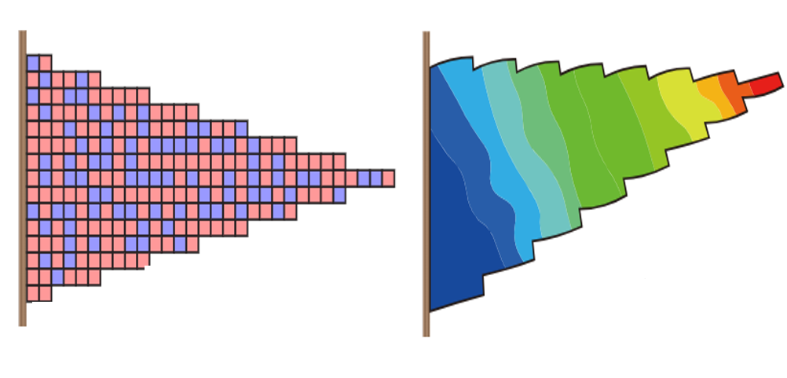

Publications
2024, 2023, 2022, earlier, under review
|  | Machine learning-driven forward prediction and inverse design for 4D printed hierarchical architecture with arbitrary shapes. Liuchao Jin, Jianxiang Cheng, Haitao Ye, Xiaoya Zhai, Jingchao Jiang, Kang Zhang, Mahdi Bodaghi, Shouyi Yu, Qi Ge*, Wei-Hsin Liao*. under review [Paper] |

|
Finite element analysis, machine learning, and digital twins for soft robots: state-of-arts and perspectives. Liuchao Jin, Xiaoya Zhai, Qiguang He, Wenbo Xue, Jingchao Jiang, Kang Zhang, Wei-Hsin Liao*. under review [Paper] |

|
Big Data, Machine Learning, and Digital Twin Assisted Additive Manufacturing: A Review. Liuchao Jin, Xiaoya Zhai, Kang Wang, Kang Zhang, Dazhong Wu, Aamer Nazir, Jingchao Jiang*, Wei-Hsin Liao*. under review [Paper] |

|
3D printing low-melting-point alloys integrated soft robots. Jingchao Jiang, Xiaoya Zhai, Liuchao Jin, Kang Zhang, Zhichao Shen, Qitao Lu, Wei-Hsin Liao*. under review [Paper] |